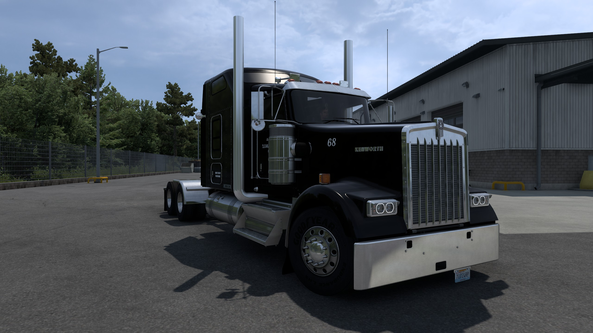
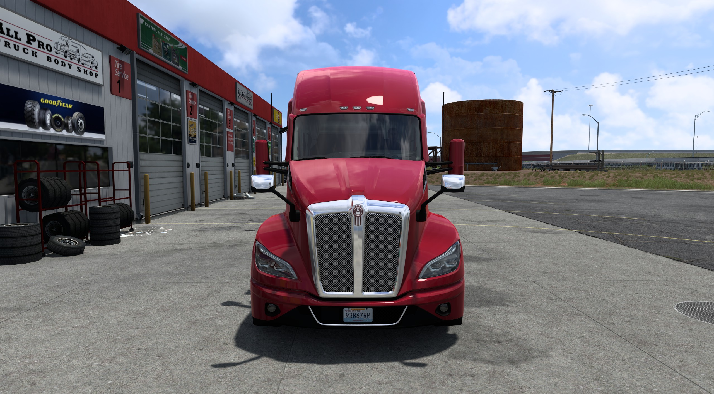
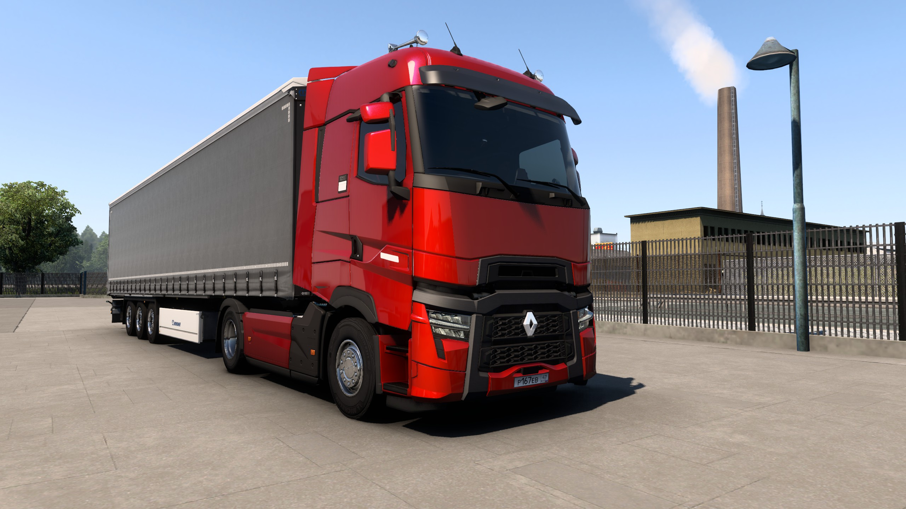

TRUCK
_LOG
Главная
Железо
Стримы
Контакты

Kenworth W900: Мощь хрома

T680: Технологии будущего

Стримы каждый вторник
Последние прохождения
▶
Груз в Техас: Полный отчет
ATS • 24.03.2024
▶
Сборка модов на графику v2.0
ETS 2 • 20.03.2024
Instagram Feed
ПОДПИСАТЬСЯ НА КАНАЛ